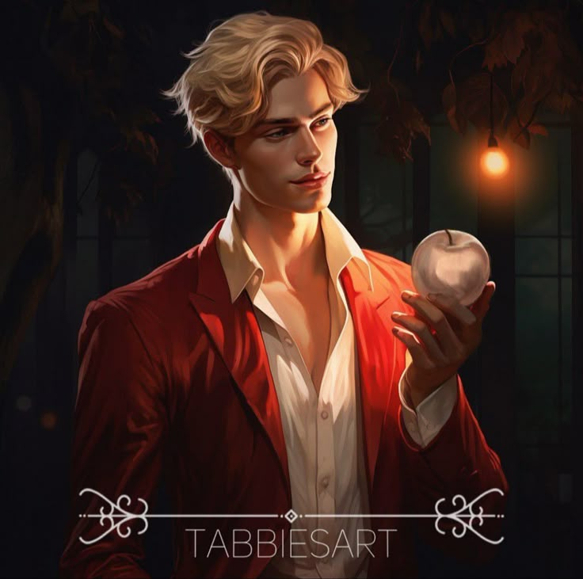

This is Aaron Warner (tehehehehe)

This guy here is a fasionista and use scented soaps. He named his dog "dog". He is an Icon.
This is Grayson Hawthorne (MUEHEHEHEHE)

He is the son of Skye Hawthorne and his half-brothers are Nash Westbrook Hawthorne, Jameson Winchester Hawthorne, and Alexander Blackwood Hawthorne.
He is also the half-brother of the twins, Gigi and Savannah.
He has a brat-y personality. He is kinda cocky and moody but trust me he is a pookie for real.
His grandfather was not a nice person. In the curb we all hate his grandfather.
This is Jacks (LALALALALA)
He is a guy full of sass. His favourite hobby is clocking people right. He once got into his emo era and coloured his hiar blue